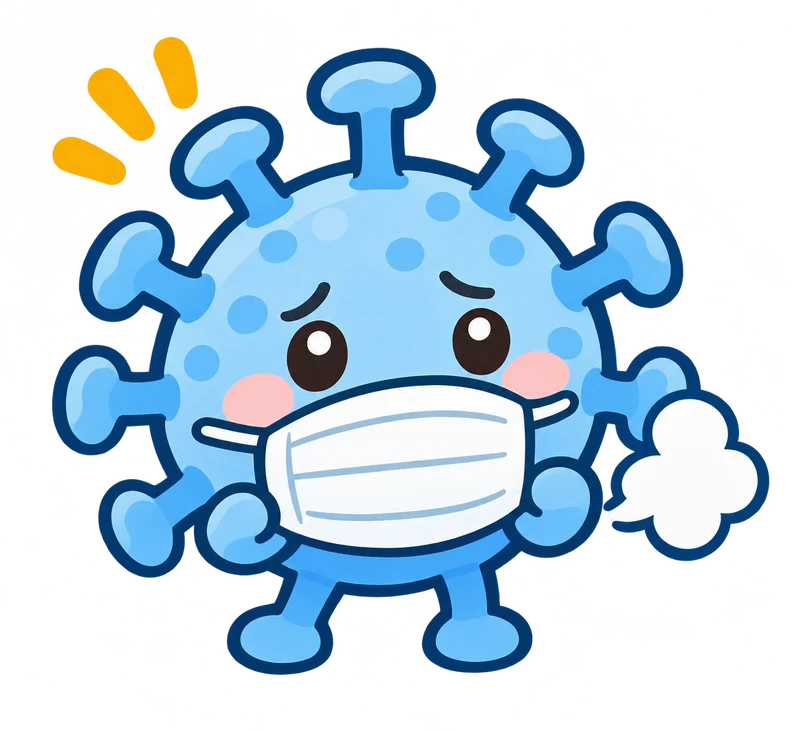

新型コロナウイルス感染症
熱、せき、のどの痛み、だるさなどが出ることがあります。症状が軽い人や、症状が出ない人もいます。
症状がない場合は、検体を採った日を0日目とし、5日を過ぎてからが再開の目安です。

どんな病原体？
新型コロナウイルス（SARS-CoV-2）が原因。発熱、せき、のどの痛み、だるさなどが出ることがある。症状がない場合もある。
どうやって広がる？ 呼吸や会話、せきなどで放出されるウイルスを含む粒子を吸い込むことなどで広がる。
学校・園はいつから行ける？
- 学校・幼稚園の出席停止
- 発症から5日、かつ症状が軽くなってから1日が過ぎるまで。
- 保育所の登園の目安
- 発症から5日、かつ症状が軽くなってから1日が過ぎている。